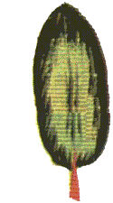
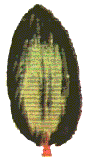

Сусанин Иван Осипович (?-1613) - крестьянин Костромского уезда. Зимой 1613г. завел отряд польско-литовских интервентов, разыскивавших царя Михаила Федоровича Романова в непроходимый лес, за что был замучен. Этот подвиг сделал его выдающимися героем российской культуры: он был воспет Рылеевым, Глинкой, Хармсом и др. В настоящий момент И.О.Сусанин выступает в роли гида по современному искусству и культуре, периодически издавая путеводитель соответствующего содержания. В этой сфере он проявляет себя как вздорный, полуграмотный, спятивший старик. Его поведение вызывает подозрение, что и поляков он в лесные дебри завел сослепу, а мог бы и до самой Елдыринской слободы довести. Сусанин часто по-старчески нечистоплотен и не чужд дедовщины. Его методы работы — огульное поношение, клевета, беспринципное вранье и наезды. В тоже время, Сусанин - прославленный российский патриот, готовый положить жизнь за царя в голове.
  Издание «Неполного собрания сочинений И.О.Сусанина» в Петербургском Архиве и Библиотеке Независимого Искусства (ПАиБНИ) при Культурном Центре «Пушкинская-10» приурочено к грядущему юбилею: в 2003 году, когда весь мир будет праздновать трехсотлетие основания Санкт-Петербурга, исполнится 390 лет бессмертному подвигу И.О.Сусанина.
В основу «Неполного собрания сочинений» ложатся редкие, чудом сохранившиеся издания самого популярного путеводителя по современной культуре рубежа тысячелетий - «Сусанин-2003», выходящего под лозунгом «Заразум!». «Сусанин» был и остается самым массовым (тираж до 175000), и доступным медиальным изданием, подметным письмом, передаваемым из рук в руки. Существует он и в сетях диковинных шкатулок японских . Своей крайней независимостью, оптимизмом, соленым словцом и художественно-классовым чутьем «Сусанин» заслужил любовь угнетенных художественных масс, стонущих под ярмом международных художественных фондов и их холуев - кураторов. Простые художники в своих незамысловатых перформансах и наивных инсталляциях верны заветам Сусанина, уводя недругов прочь от заезженных большаков заумного барского дискурса в дремучие чащи бесстыжей русской натуры.
Издание представлено на фоне мемориальной экспозиции, посвященной патриотической и творческой деятельности И.О.Сусанина за минувшие четыре столетия. В экспозиции представлены личные вещи, материальные остатки и продукты жизнедеятельности великого патриота и критика. В основу экспозиции находятся критические и публицистические сочинения Сусанина.
«Неполное собрание сочинений И.О.» - репринтное издание раритетов тиражом 200 экземпляров.